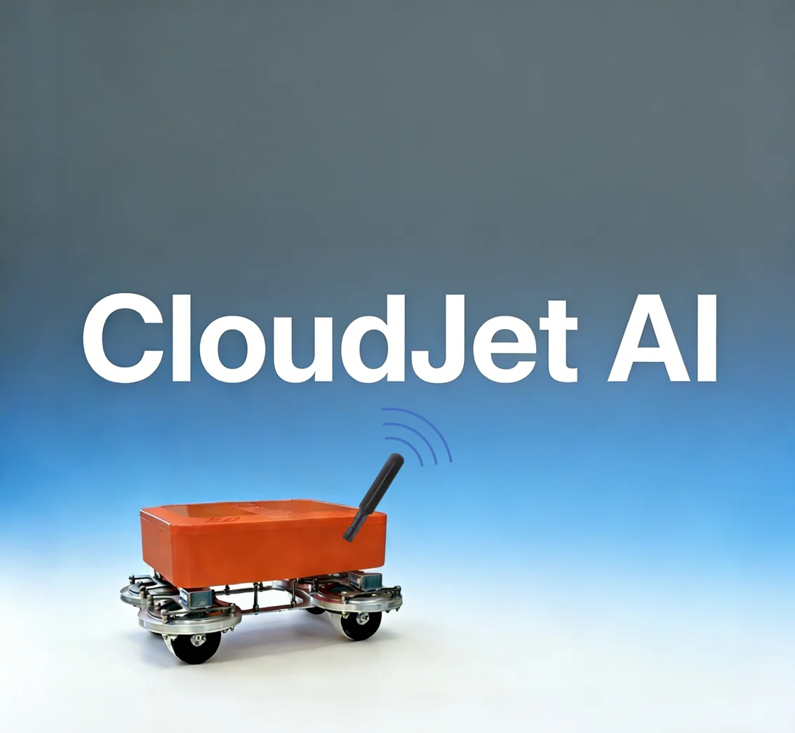
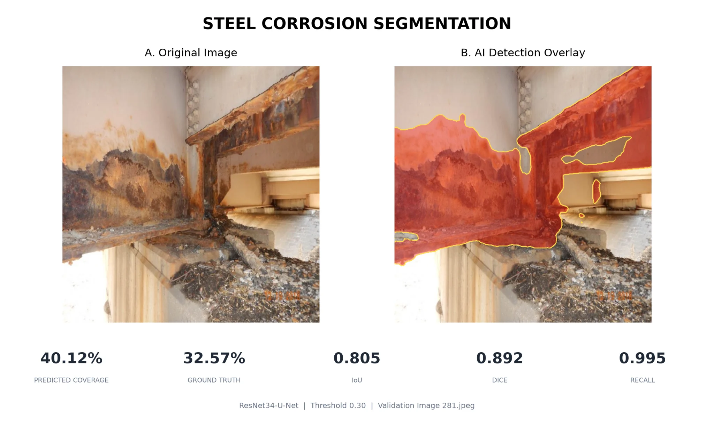

Integrated Robotics
Magnetic locomotion, sensing hardware, wireless communication, and remote-control components assembled into a climbing inspection prototype.
A steel-structure climbing inspection robot prototype combining magnetic locomotion, internal-damage sensing, and AI-powered corrosion segmentation. I founded and led the nine-member development team.

Prototype mobility demonstration on a test surface. The clip documents climbing capability during testing, rather than a deployment on an operational bridge.
Magnetic locomotion, sensing hardware, wireless communication, and remote-control components assembled into a climbing inspection prototype.
ResNet34-U-Net segmentation identifies corroded regions at the pixel level to support corrosion-area measurement.
A representative labeled-data evaluation example. The visualization compares the original image with the predicted corrosion mask overlay.

Additional real-world image captures and inference demonstrations will be added after further testing.